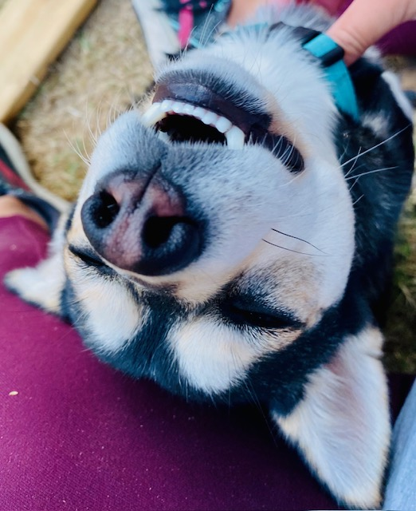

More About Her Breed
The Alaskan Klee Kai is a relatively new breed, developed to be a miniature version of the Alaskan Husky. They are known for their striking resemblance to their larger cousins, intelligence, and often their vocal nature – hence Raven's famous "woo-woo!"
They are highly intelligent and energetic, thriving on interaction and mental stimulation. Despite their small size, they require regular exercise to keep them happy and healthy. Raven is a perfect example of her breed's charming and lively spirit!